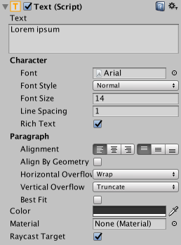
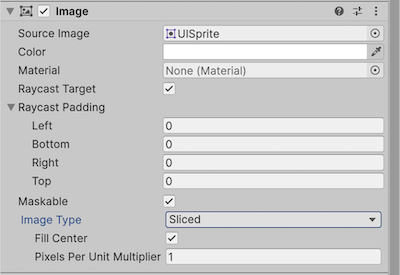
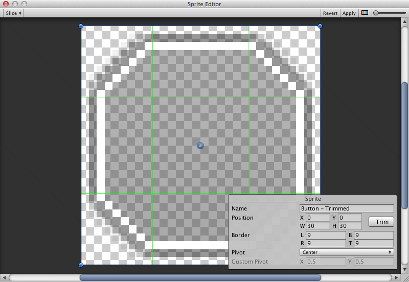
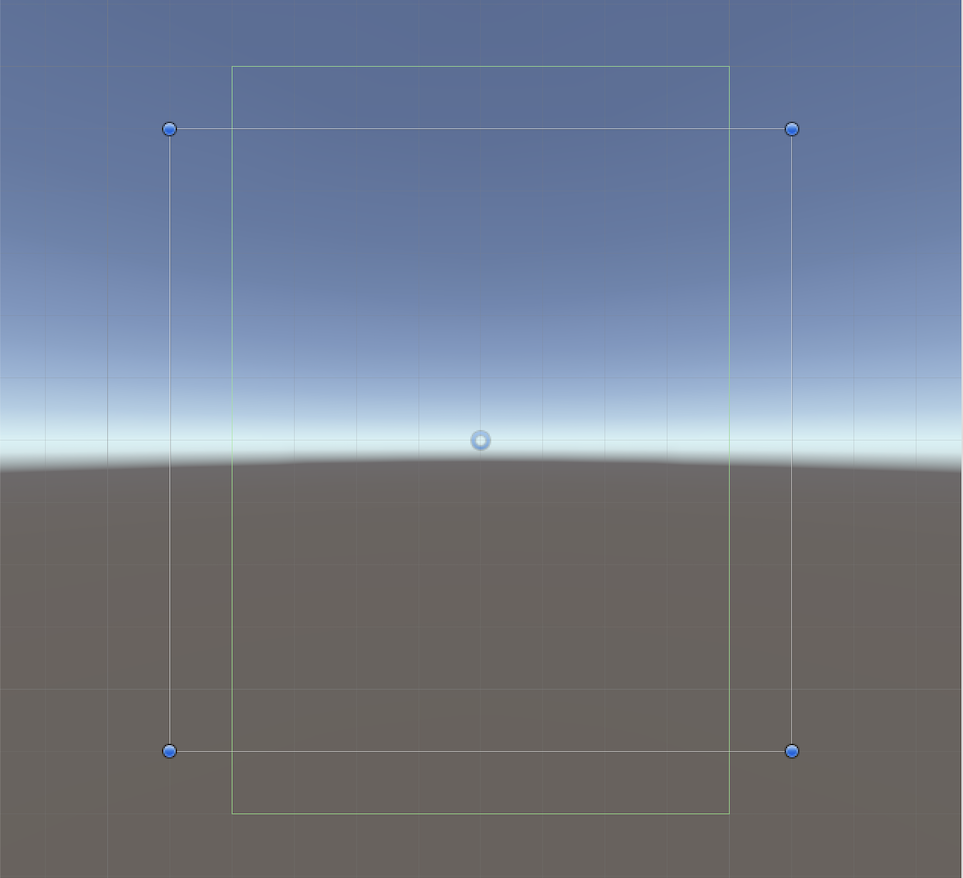

UI 系统提供了用于实现 GUI 功能的新组件，本节介绍这些组件的基础用法。
文本（Text）

Text 也称 Label，在 Text 区域输入要显示的内容。可设置字体、样式、字号及是否启用 Rich Text。
可设置文本对齐，以及 Horizontal / Vertical Overflow 来控制超出矩形宽高时的处理方式。Best Fit 会自动调整字号以适应可用空间。
图像（Image）

Image 对象包含 Rect Transform 和 Image 组件。原文说明在 Target Graphic 字段应用 Sprite，在 Color 设置颜色，也可指定 Material。Image Type 决定 Sprite 的显示方式：
- Simple：均匀缩放整个 Sprite。
- Sliced：使用 3×3 九宫格划分，调整尺寸时角部不变形，仅拉伸中央部分。
- Tiled：类似 Sliced，但中央部分通过平铺重复填充而非拉伸。Sprite 没有边框时，平铺整个 Sprite。
- Filled：基本显示方式类似 Simple，但按指定起点、方向、方法和比例逐步填充。
Simple 或 Filled 模式下显示的 Set Native Size，会将图像恢复为 Sprite 的原始尺寸。
在 Texture Type 中选择 Sprite (2D / UI)，可将图像导入为 UI Sprite。相较旧 GUI Sprite，新 Sprite 有更多导入设置，主要新增 Sprite Editor，可进行 9-slicing，将图像分成九个区域，缩放时角部不会拉伸或变形。

原始图像（Raw Image）
Image 使用 Sprite，Raw Image 使用 Texture，不提供 Sprite 边框等功能。只在必要时使用 Raw Image，多数场景使用 Image 即可。
遮罩（Mask）
Mask 本身不可见，用于改变子元素的显示范围。它将子元素限制在父级形状内；子级比父级大时，只有落在父级范围内的部分可见。
射线接收器（Raycast Receiver）

Raycast Receiver 是不可见的组件，拦截 Graphic Raycaster 的射线，以检测或阻挡点击、触摸等指针事件。可在 Canvas 上定义不渲染可见几何的交互区域，比透明 Image 更高效。Raycast Target 控制是否拦截输入，Raycast Padding 调整相对于 RectTransform 边界的命中区域。
效果（Effects）
视觉组件还可添加简单的投影、轮廓等效果，更多信息参阅 UI Effects。